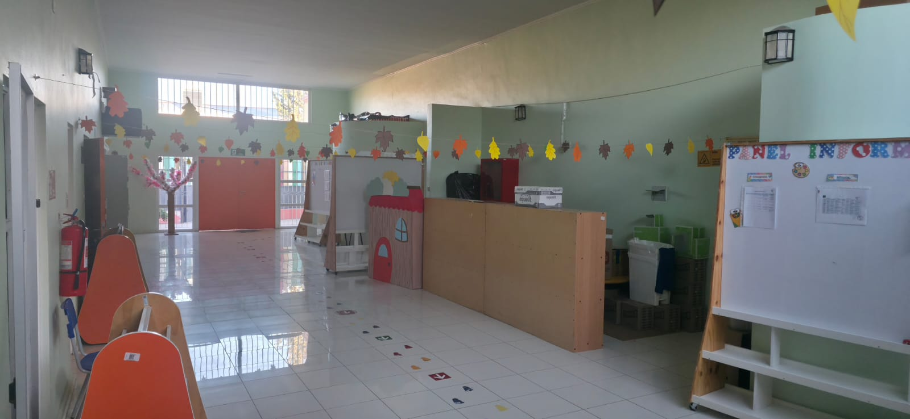
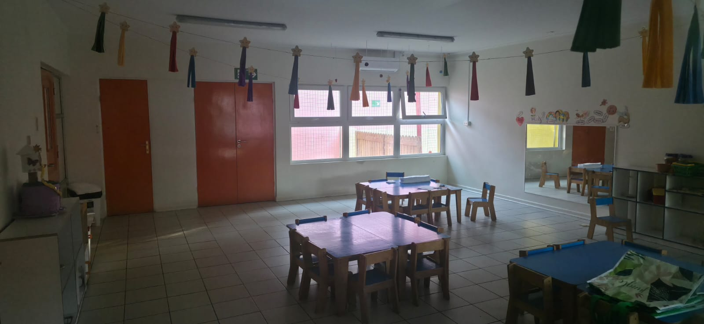
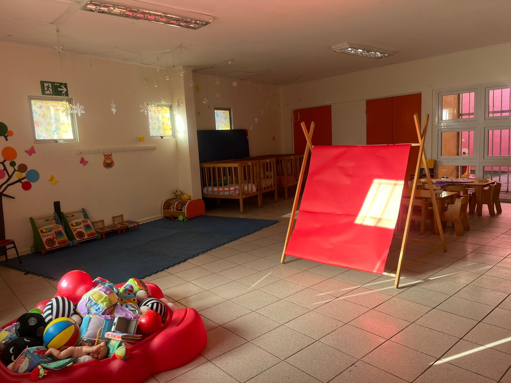
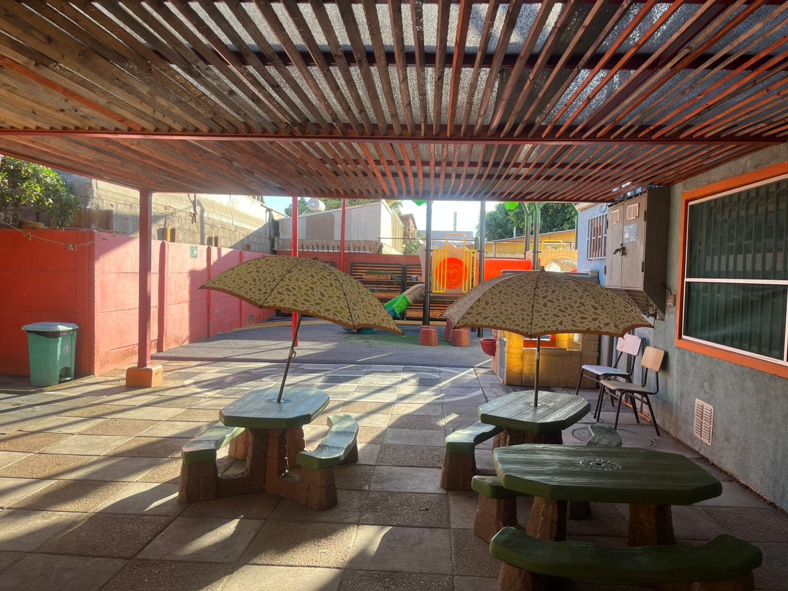
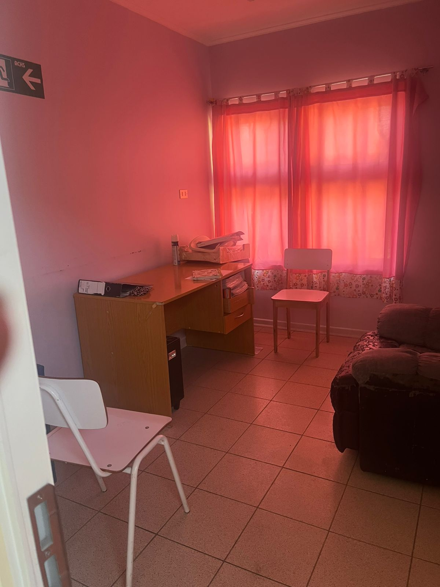

¿Quiénes somos?
Nuestro Jardín Infantil se caracteriza por desarrollar la labor educativa conjunta desde la afectividad y promover el respeto y diálogo constante.
Educación con afectividad y valores

Nuestro Jardín Infantil se caracteriza por desarrollar la labor educativa conjunta desde la afectividad y promover el respeto y diálogo constante.
Promover el desarrollo integral de cada niño y niña mediante el juego, la interacción y el aprendizaje significativo.
Fortalecer conocimientos, destrezas y habilidades en las niñas y niños a través del desarrollo de la creatividad.
En nuestro jardín infantil promovemos un ambiente lleno de cariño, confianza y seguridad, donde cada niño y niña pueda desarrollarse de manera integral y sentirse valorado. A través de nuestras actividades diarias, fomentamos hábitos, actitudes y formas de relacionarse que favorecen una convivencia armoniosa, el aprendizaje y el bienestar de todos. Creemos que los valores se aprenden desde pequeños, mediante el ejemplo, el juego y la interacción, acompañando a cada niño y niña en su crecimiento y formación dentro de un entorno afectivo y respetuoso.
Es la base fundamental para una convivencia sana y pacífica entre los miembros de una comunidad
Pensar con inteligencia y cuidado lo que vamos a decir, escuchar atentamente a otros y hacernos oír con respeto por los demás




